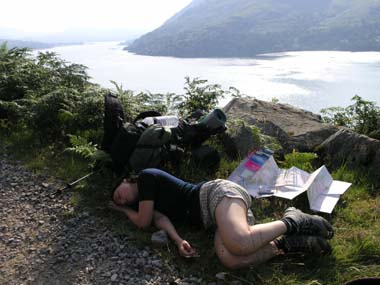

Mám ráda hořkou kávu k snídani, a když mi leze beruška po dlani
Mám ráda moře šepotání, a když přijdou jarní tání
Mám ráda svoji práci, a když mě ráno budí ptáci
Mám ráda hrubou skálu a svou zelenou šálu
Mám ráda malování jen tak pro radost a zmoknout v máji až na samou kost
Mám ráda, když zpěvem smutek zaháním a vracet se domů před svítáním
Mám ráda drsné hory a svoje kolo a zelenošedé pohory.
Mám ráda upřímnost, protože lží je všude kolem dost.
Nemám ráda sladké řeči
Hlavně, když se vedou v křeči
Nemám ráda prázdnotu,
Smutek, pláč a samotu.